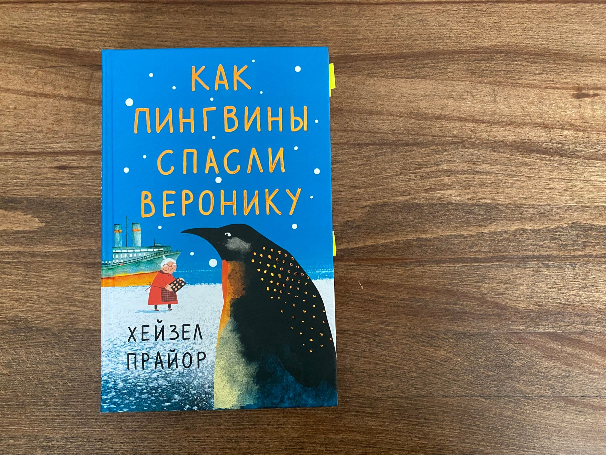

«Возраст подарил мне кое-какие ограничения, но они, конечно же, не являются непреодолимыми.»
Вероника Маккриди — прожила сложную жизнь. К её концу она подходит хоть и с деньгами, но совершенно без родных и сколько-нибудь близких людей.
Однажды героиня книги по телевизору случайно видит передачу о королевских пингвинах. После передачи Вероника не находит в своей жизни ничего более интересного, чем срочно отправиться в Антарктиду.
Книга рассказывает о том, чего нам всем не хватает: о деньгах, о близких людях, о необходимости приключений и о конечности жизни. А ещё учит не судить людей по обложке.
По тональности книга похожа на Фредерика Бакмана. Вероникой Маккриди вполне могла бы стать Зара из его «Тревожных людей».